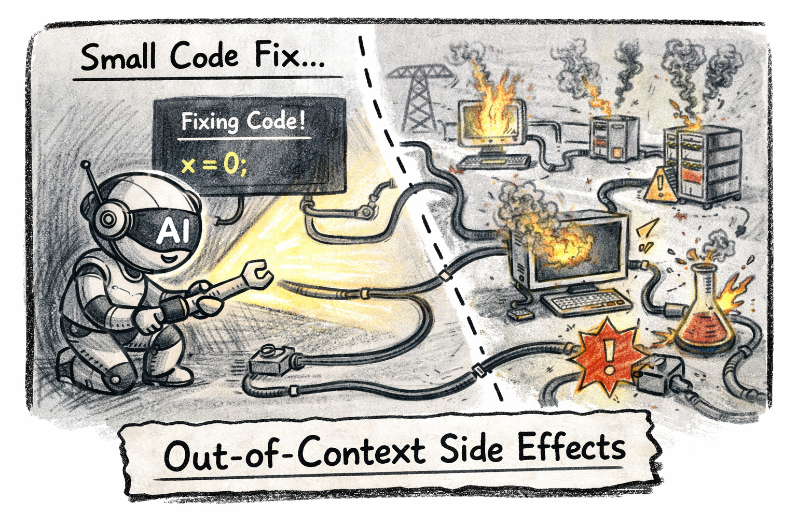

AI Agent의 명확한 한계
AI 코딩 에이전트가 개발자를 대체한다? 세 가지 벤치마크가 보여주는 불편한 진실
대체한다는 착각
매주 새로운 AI가 나온다. "이제 개발자 필요 없다"는 제목의 글이 올라오고, 커뮤니티에는 AI로 만든 앱을 서로 홍보하기 바쁘다. 프롬프트 하나로 앱이 뚝딱 만들어지는 데모 영상은 인상적이다.
나는 임베디드 펌웨어를 개발한다. 수천 개의 클래스로 구성된 대규모 C++ 코드베이스를 다루는 현장에서, AI 코딩 에이전트를 적극적으로 활용해 왔다. 그래서 말할 수 있다.
AI는 강력한 도구다. 하지만 "대체"와는 거리가 멀다.
왜 그런지, 벤치마크로 먼저 보자.
세 가지 벤치마크가 보여주는 한계
1. Needle in a Haystack — 건초더미에서 바늘 찾기

LLM의 컨텍스트 윈도우가 128K, 200K, 1M으로 점점 커지고 있다. 그러면 더 많은 정보를 넣을수록 더 잘 작동할까?
"Needle in a Haystack" 벤치마크는 이 기대에 찬물을 끼얹는다. 실험은 단순하다. 긴 텍스트(건초더미) 중간에 특정 정보(바늘)를 삽입하고, 모델에게 그 정보를 찾게 한다.
결과는 명확하다:
- 컨텍스트가 길어질수록 회상 정확도가 떨어진다. 토큰 수가 증가하면 모델이 정보를 정확하게 찾아내는 능력이 감소한다.
- 위치에 따라 성능이 달라진다. 바늘이 텍스트의 처음이나 끝에 있으면 비교적 잘 찾지만, 중간에 있으면 놓치는 경우가 급증한다. "Lost in the Middle" 현상이다.
- 단일 바늘은 찾아도, 여러 바늘은 못 찾는다. 하나의 정보를 검색하는 건 개선되고 있지만, 여러 정보를 동시에 찾고 이를 연결해 추론하는 Multi-Needle 테스트에서는 성능이 급격히 떨어진다.
이것이 실제 개발에서 의미하는 바는 크다. 하나의 변경이 미치는 영향을 추적하려면, 코드베이스 전반에 흩어진 여러 관련 정보를 동시에 파악하고 연결해야 한다. 바로 Multi-Needle + Reasoning이 필요한 상황이다. 그리고 이것은 현재 LLM이 가장 취약한 영역이다.
컨텍스트 윈도우가 커진다고 해서 AI가 더 똑똑해지는 게 아니다. 넣을 수 있는 양이 늘어났을 뿐, 소화할 수 있는 능력이 함께 늘어나는 건 아니다.
2. Car Wash Test — 패턴 매칭의 함정

2025년, Opper.ai가 53개 주요 AI 모델을 대상으로 간단한 질문을 던졌다.
"세차장이 50미터 거리에 있어. 걸어갈까, 운전해서 갈까?"
사람이라면 1초 만에 답한다. 세차하러 가는 거니까 당연히 차를 가져가야 한다. 운전해서 간다.
결과는 충격적이었다:
- 53개 모델 중 48개가 "걸어가라"고 답했다.
- 10회 반복 테스트에서 10/10 정답을 낸 모델은 5개뿐.
- GPT-4o, 대부분의 Llama, Mistral 모델은 전부 0/10.
- 10,000명의 인간 대조군은 71.5%가 정답.
왜 실패했을까? "50미터"라는 짧은 거리가 함정이다. 훈련 데이터에서 짧은 거리는 압도적으로 "걸어가라"와 연결된다. 모델은 이 통계적 패턴에 매칭하고, "차를 세차장에 가져가야 한다"는 물리적 맥락을 놓친다.
이것이 AI의 본질적 한계다. LLM은 세계를 이해하는 것이 아니라, 텍스트 패턴을 매칭하는 것이다. 패턴이 명확하면 놀라운 성능을 보이지만, 패턴 너머의 상식적 추론이 필요한 순간 무너진다.
코딩에서도 마찬가지다. "이 함수를 최적화해줘"라는 요청에는 패턴 매칭으로 그럴듯한 결과를 낸다. 하지만 "이 함수를 바꾸면 시스템 전체에 어떤 영향이 있어?"라는 질문에는 — 세차장에 걸어가라고 답하는 것과 같은 수준의 실수를 한다.
3. Blind Context — 보이지 않으면 존재하지 않는다

가장 근본적인 한계다. AI는 컨텍스트 윈도우에 들어오지 않은 정보는 존재 자체를 모른다.
대규모 코드베이스는 수백만 줄에 달한다. AI 에이전트에게 "이 함수를 수정해줘"라고 요청하면, 에이전트는 해당 함수와 직접 연결된 몇 개의 파일만 본다. 하지만 실제로 그 함수의 변경이 미치는 영향은 수십 개의 모듈에 걸쳐 있다.
AI가 보는 세계 실제 세계
───────────── ─────────
function A ←── 수정 요청 function A
→ calls B → calls B
→ calls C → calls C
→ D가 A를 참조 (AI는 모름)
→ E의 타이밍이 A에 의존 (AI는 모름)
→ F의 에러 핸들링이 A의 리턴값 가정 (AI는 모름)RAG, 코드 인덱싱, 도구 사용을 결합한 에이전트 아키텍처가 이 한계를 우회하려 시도하고 있다. 하지만 이것은 본질적인 해결이 아니라 보완이다. 어떤 파일을 참조할지 선택하는 판단 자체가 시스템 전체에 대한 이해를 전제로 하기 때문이다. 결국 "무엇을 볼 것인가"를 결정하는 건 여전히 개발자의 몫이다.
이것은 "아직" 못하는 게 아니다. 물리적 구조의 문제다. HBM이 유한한 한, AI가 동시에 볼 수 있는 세계는 제한적이다. 시니어 개발자가 수년간 축적한 시스템 전체의 멘탈 모델 — 수천 개 클래스의 관계, 하드웨어 인터럽트 흐름, 메모리 레이아웃, 타이밍 제약 — 이것은 어떤 컨텍스트 윈도우에도 담기지 않는다.
AI에게 보이지 않는 것은 존재하지 않는다. 그리고 실제 소프트웨어 시스템에서, 보이지 않는 것이 언제나 보이는 것보다 크다.
변경의 파급효과 — 하나의 수정이 시스템 전체를 흔든다

Blind Context의 직접적인 결과가 바로 변경의 파급효과를 예측하지 못하는 문제다.
AI에게 "이 함수의 리턴값을 null 대신 빈 배열로 바꿔줘"라고 요청한다고 해보자. 겉으로 보기엔 단순한 수정이다. AI는 몇 초 만에 바꿔준다. 테스트도 통과한다. 커밋된다.
그런데 3주 뒤, 프로덕션에서 이상한 버그가 발생한다.
- 모듈 X는 이 함수가
null을 반환할 때만 특정 경로로 분기했다. 빈 배열을 받은 이후로 그 경로는 영원히 실행되지 않는다 - 모듈 Y는 리턴값의 길이를 체크해서 "0이면 에러"로 처리했다.
null은 에러 처리를 안 탔지만, 빈 배열(길이 0)은 에러로 처리된다 - 모듈 Z는 캐시 키 생성에 이 함수의 리턴값을 JSON 직렬화해서 쓴다.
null과[]는 다른 문자열이라 캐시가 전부 미스가 된다
이 세 모듈은 AI의 컨텍스트 윈도우에 들어오지 않았다. AI는 이 모듈들의 존재 자체를 몰랐다. 그래서 변경의 파급효과를 고려할 수 없었다.
왜 이것이 "코드 리뷰만으로" 해결되지 않는가
"그러면 사람이 코드 리뷰를 철저히 하면 되지 않나?"라고 물을 수 있다. 하지만 이 질문은 AI의 속도와 사람의 검증 속도가 같다는 가정을 한다.
현실은 다르다. AI는 1분에 10개의 수정을 제안하고, 사람이 그것을 전부 검토하려면 1시간이 걸린다. 검증이 생성을 따라가지 못하면, 결국 검증이 얕아진다. "빠르게 만들어낸 것을 빠르게 믿고 싶은 유혹"이 시스템에 누적된다.
그리고 시니어 개발자가 "이 변경이 어디에 영향을 주지?"를 파악하는 능력은 수년간의 코드베이스 이해에서 나온다. 그 이해는 코드 텍스트가 아니라 멘탈 모델로 존재한다. AI는 이 멘탈 모델에 접근할 수 없다.
변경의 파급효과를 이해하는 것은 코드를 "읽는" 능력이 아니라, 시스템을 "아는" 능력이다. 전자는 AI가 할 수 있다. 후자는 아직 사람의 영역이다.
코딩은 개발의 일부일 뿐이다

AI 에이전트 데모가 보여주는 건 항상 "코딩" 부분이다. 하지만 실제 소프트웨어 개발에서 코드를 새로 작성하는 시간은 전체의 일부에 불과하다.
개발의 실제 구성을 보자:
- 요구사항 분석과 해석 — 모호한 스펙을 구체적 설계로 전환
- 아키텍처 설계와 트레이드오프 — 시스템 전체의 구조적 판단
- 디버깅과 재현 — 문제의 원인을 추적하고 격리
- 코드 리뷰와 설계 논의 — 팀 내 기술적 의사결정
- 테스트 환경 구축과 검증 — 실제 환경에서의 동작 보장
- 팀 간 협업 — 하드웨어팀, QA팀, 기획팀과의 소통
- 코드 작성 — 이것이 전체 중 일부
임베디드 개발에서는 여기에 더 추가된다. JTAG 디버깅, 오실로스코프로 파형 분석, 칩 에라타 확인 — 이런 것들은 컨텍스트 윈도우 밖에 존재하는 물리적 세계의 영역이다. AI가 접근조차 할 수 없다.
혼자 개발하고 책임 없는 사이드 프로젝트라면 AI에게 전부 맡길 수 있다. 하지만 산업용 제품에서는 그렇지 않다. 실패의 비용이 다르다.
What vs Why — AI가 처리하는 것과 못하는 것

AI는 "what"을 빠르게 처리한다. 이 함수가 무슨 일을 하는지, 이 코드에 버그가 있는지, 이 패턴을 이렇게 리팩토링할 수 있는지.
하지만 개발의 본질은 "why"에 있다.
왜 이 모듈은 비효율적으로 보이는 방식을 고집하는가? 왜 이 인터페이스에는 사용되지 않는 것 같은 파라미터가 남아 있는가? 레거시 코드에는 항상 그럴만한 이유가 있다. 그 이유는 코드 텍스트가 아니라, 팀의 기억과 문서화되지 않은 의사결정의 맥락 속에 존재한다.
AI가 잘하는 것:
- 패턴이 명확한 코드를 빠르게 생성
- 보일러플레이트와 반복 코드 자동화
- 유닛 테스트 템플릿 초안 작성
- 문서 요약, 코드 리뷰에서 문법적·논리적 오류 탐지
- 익숙하지 않은 프레임워크의 빠른 프로토타이핑
개발자가 잘하는 것:
- 변경 사항이 시스템 전체에 미치는 영향 판단
- 스펙에 명시되지 않은 엣지케이스 예측
- "왜 이렇게 구현했는가"의 역사적 맥락 보유
- 모호한 요구사항을 구체적 설계로 전환
- 디버깅 과정에서의 직관과 경험적 판단
이 두 영역은 겹치지 않는다. AI가 아무리 발전해도 개발자의 "why" 영역을 침범하기 어렵고, 개발자가 아무리 노력해도 AI의 "what" 처리 속도를 따라잡기 어렵다.
AI는 대체재가 아니라 레버리지 도구다
AI를 부정하는 게 아니다. 나는 매일 AI를 활용한다.
- 보일러플레이트에 쏟던 시간을 설계와 아키텍처에 재투자한다
- TDD 사이클의 초기 테스트 생성을 AI에 맡겨 반복 속도를 높인다
- 코드 리뷰의 1차 필터로 활용해 리뷰 품질을 올린다
- 미뤄왔던 문서화 작업을 완료한다
이것은 보조운전과 자율주행의 차이와 같다. 보조운전은 운전자의 판단을 전제로, 반복적인 부분을 맡아준다. 핸들에서 손을 뗄 수 있다는 뜻이 아니다.
[ AI 없이 ]
개발자 ──── 코딩 + 테스트 + 리뷰 + 문서화 ──── 제한된 범위
[ AI as Leverage ]
개발자 ──┬── 아키텍처 / 판단 / 설계 ──── 핵심에 집중
│
└── AI가 보일러플레이트 / 테스트 / 문서 초안 처리
──── 레버리지된 범위AI는 개발자의 판단 범위를 대체하는 것이 아니라 확장한다. 같은 시간 안에 더 넓은 범위를 커버하고, 더 깊은 문제에 집중할 수 있게 해준다.
더 좋은 망치가 아무리 좋아져도 목수를 대체하지 않는다. 더 좋은 망치는 더 좋은 목수의 손에서 가치를 발휘한다.
다음 편 예고
AI의 한계는 명확하다. 그렇다면 이 한계는 왜 발생하는 걸까? "아직 기술이 부족해서"일까, 아니면 더 근본적인 이유가 있을까?
다음 편에서는 HBM, KV Cache, Context Rot — AI의 한계가 발생하는 물리적 원인을 파헤친다.